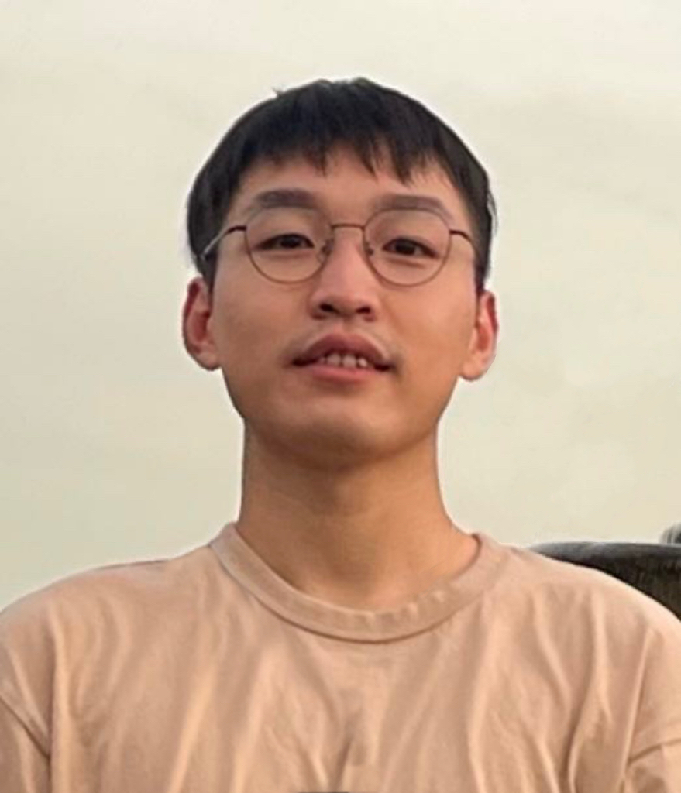

Xiaocong XU
Postdoctoral Research Associate
Email:
xuxiaoco (AT) marshall.usc.edu
Data Sciences and Operations Department
Marshall School of Business
University of Southern California
Los Angeles, CA 90089

Welcome to my homepage! I am currently a Postdoctoral Research Associate at the
Marshall School of Business
at the
University of Southern California
, mentored by Prof.
Yingying Fan
and Prof.
Jinchi Lv
. I received my Ph.D. degree in 2024 from the
Department of Mathematics
at the
Hong Kong University of Science and Technology
, where I was advised by Prof.
Zhigang Bao
. I was also fortunate to be supervised by Prof.
Qiyang Han
on specific projects. My research interests primarily revolve around random matrix theory and high-dimensional statistics.
I am currently on the 2025–2026 academic job market and would be happy to discuss any opportunities!
Papers
Asymptotic FDR control with model-X knockoffs: is moments matching sufficient?
(with Yingying Fan, Lan Gao, Jinchi Lv).
arXiv:2502.05969.
Gradient descent inference in empirical risk minimization
(with Qiyang Han).
Annals of Statistics
, to appear.
Precise asymptotics and refined regret of variance-aware UCB
(with Yingying Fan, Jinchi Lv, Yuxuan Han, Zhengyuan Zhou).
Advances in Neural Information Processing Systems 2025
(Spotlight).
Phase transition for the bottom singular vector of rectangular random matrices
(with Zhigang Bao, Jaehun Lee).
Journal of Functional Analysis
, 290(4), 111266, 2026.
A leave-one-out approach to approximate message passing
(with Zhigang Bao, Qiyang Han).
Annals of Applied Probability
, 35(4), 2716-2766, 2025.
The distribution of Ridgeless least squares interpolators
(with Qiyang Han).
arXiv:2307.02044.
Phase transition for the smallest eigenvalue of covariance matrices
(with Zhigang Bao, Jaehun Lee).
Probability Theory and Related Fields
, 192, 35-133, 2025.
Extreme eigenvalues of log-concave ensemble
(with Zhigang Bao).
Annales de l'Institut Henri Poincare: Probabilites et Statistiques
, 61(1), 155-184, 2025.
Spectral statistics of sample block correlation matrices
(with Zhigang Bao, Jiang Hu, Xiaozhuo Zhang).
Annals of Statistics
, 52(5), 1873-1898, 2024.